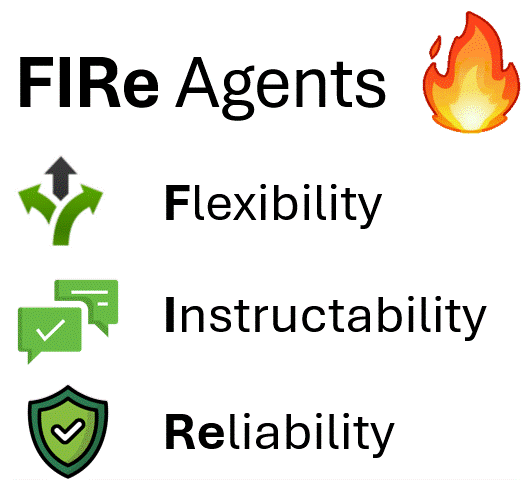
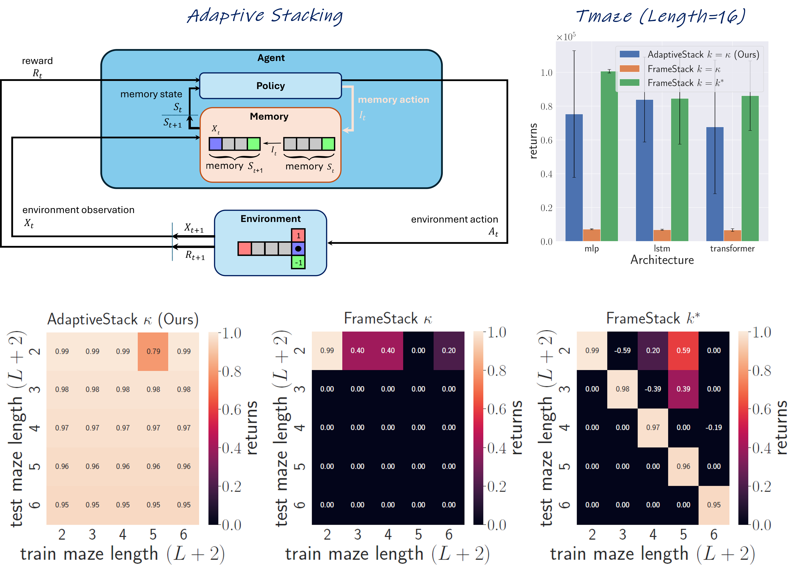
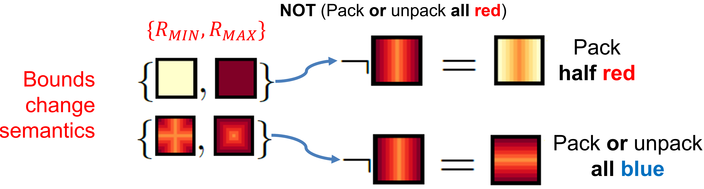
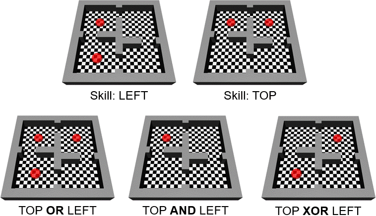
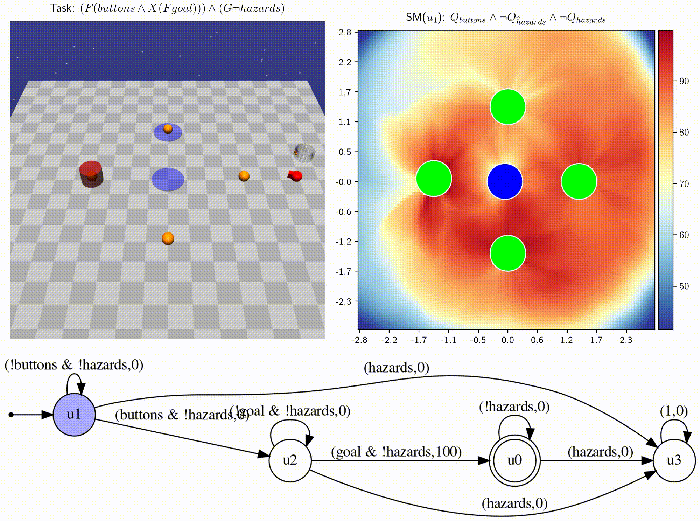
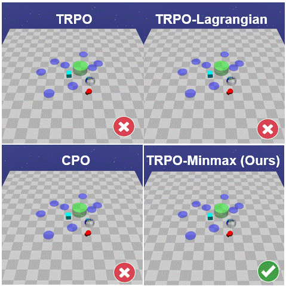

Geraud
Nangue Tasse


Welcome!
I am a Lecturer at the University of the Witwatersrand (Wits) in the RAIL and CAandL labs. Previously I did my Ph.D. and M.Sc. here advised by Benjamin Rosman and Steven James. Before moving to Wits, I did my B.Sc. majoring in Computer Science, Pure&Applied Mathematics and Physics&Electronics at Rhodes University.
I'm currently interested in understanding general intelligence, and believe many of its observed and desired properties (e.g. sample efficiency, generalisation, continual learning, language, reasoning, safety, interpretability, etc) can emerge from a single unified framework with minimal added priors. Hence my main research interests lie in reinforcement learning (RL) and related fields (like robotics, neuroscience, psychology, etc). See the featured research below for a snapshot, particularly my Ph.D. Thesis.
My life philosophy: "What I cannot create, I do not understand" - Richard Feynman
News
- December 2022: Talk at the Deep Learning IndabaX South Africa in Pretoria
- October 2022: Talk at UCT's SHOCKLAB
- August 2022: Lecturing a Computational Intelligence MSc course
- July 2022: Talk at Brown's robotics lab
- June 2022: New RLDM paper on World Value Functions
- May 2022: Summer PhD research internship at IBM Thomas J. Watson Research Center in New York
- January 2022: New ICLR paper on Generalisation in Lifelong RL
- September 2021: Workshop paper at AAAI Fall Symposium on AI for HRI
- August 2021: Teaching assistant at neuromatch
- April 2021: Won the IBM PhD Fellowship
Featured Research

- Flexibility: Agents should adapt to various tasks with minimal learning;
- Instructability: Agents should understand and execute task specifications provided by humans in a comprehensible manner;
- Reliability: Agents should solve tasks safely and effectively with theoretical guarantees on their behavior.

- Efficiently handles long-term dependencies by learning what to remember in NMDPs.
- Reduces memory and compute costs while preserving optimality.
- Creates a compact abstraction leading to better generalisation.


- Ensures reward functions in practice (e.g. dense) respect logical axioms.
- Construct a Boolean task basis which can be used to generate a minimal task specification language.
- Use WVFs to guarantee zero-shot performance without spoon-feeding (e.g. episodic-goals, intrinsic rewards, auxiliary objectives).

- We introduce infinitely composable skill primitives to address the super-exponential spatial and temporal curses of dimensionality.
- Learning necessary skill primitives enables zero-shot near-optimal policies for any new temporal logic task.
- Skill machines (SM) can be learned directly from reward machines and are satisficing, with fewshot optimality.

The paper introduces a new framework for safe RL where the agent learns safe policies solely from scalar rewards using any suitable RL algorithm. This is achieved by replacing the rewards at unsafe terminal states by the minmax penalty, which is the strict upperbound reward whose optimal policy minimises the probability of reaching unsafe states.

Intuition: while solving one task, we should learn about other tasks that we may need to solve in the future.
- No spoon-feeding: At each step, the goal to achieve is agent-choosen, not environment-given.
- Mastery: Learns to achieve all possible goal states, and their value in the current task. N.B. Necessary for compositional generalisation
- True RL: No task-specific intrinsic rewards are given. Learning is driven solely from maximisation of scalar environment rewards from a single stream of experience.
Personal
Reality: Shows me a new quality anime;
Me: Now this, does put a smile on my face.
When I am not procrastinating on current research work with other fun ideas, I am doing trash drawings.
Feel free to contact me via email, Twitter, or Linkedin.